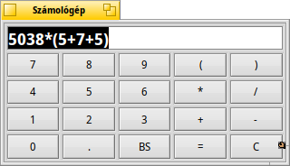

Magyar
Magyar Català
Català Deutsch
Deutsch English
English Español
Español Français
Français Italiano
Italiano Polski
Polski Português
Português Português (Brazil)
Português (Brazil) Română
Română Slovenčina
Slovenčina Suomi
Suomi Svenska
Svenska 中文 ［中文］
中文 ［中文］ Русский
Русский Українська
Українська 日本語
日本語 Számológép (DeskCalc)
Számológép (DeskCalc)
| Asztalsáv: | ||
| Útvonal: | /boot/system/apps/DeskCalc | |
| Bellítások: | ~/config/settings/DeskCalc_settings |
Egyszerű számológép, ami remek funkciókat tartalmaz, mégha elsőre nem is látszik.
A Számológép többet nyújt, mint amit elsőre sugall.
Az alapvető műveleteken kívül (+, -, *, /, %, ^) a pi, az e és az alábbi funkciók használhatóak:
!, acos, asin, atan, atan2, cbrt, ceil, cos, cosh, exp, floor, log, log10, pow, sin, sinh, sqrt, tan, tanh.A jobb egérgomb lenyomásával a következő lehetőségeket kapjuk:
a "radián" és a "fok" között válthatunk ALT 0 minimális méret, ahol nem látszik a billentyűzet. ALT 1 a Számológép alap megjelenése ALT 2 további billentyűk megjelenítése bonyolultabb számolásokhoz A Számológép eléggé toleráns a bevitellel kapcsolatban. Néhány műveletet több módon is bevihetünk:
Osztás: /, :, \\
Szorzás: *, x
Ugyanakkor mind a ., mind a , tizedes értéket jelölnek, ezért ne használjuk ezres-tagolásra (például: 1,230.00).A számológép izlés szerint átméretezhető mindaddig, amíg nem használjuk Replikánsként. Replikánsként való használat esetén be kell jelölni a menüpontot az Asztalsávon.
A Számológép színe is módosítható, csak egy színt kell az ablakra dobni, például az Icon-O-Matic-ból.
A számolási előzmények a ↑ és a ↓ billentyűkkel előhozhatóak.
A beviteli mező tartalma kijelölhető, és bármelyik programba "bedobható". Arra is lehetőségünk van, hogy azt egy Nyomkövető ablakba vagy az Asztalra dobjuk, mely esetben egy szöveges fájlt hozunk létre a kijelölt tartalommal.
A műveletek visszavonására is lehetőségünk van:
Készítsünk egy-egy kivágást az előbb leírt módon a számolás szakaszairól, majd szükség esetén azokat csak húzzuk az ablakba.
Persze, számolás is bedobható a Számológép ablakba.A Számológép a Terminálból is használható. Ehhez csak annyit kell tennünk, hogy idézőjel közé téve paraméterként adjuk meg a képletet, amit ki akarunk számolni:
~> DeskCalc "sin(45)*(cos(12)+3.45)" 3.6536554673202546181795194727005826674359494735820338441084848
Megjegyzés: a Terminálban használva a Számológépet a szögfüggvények minden esetben radiánban adják meg az eredményt.